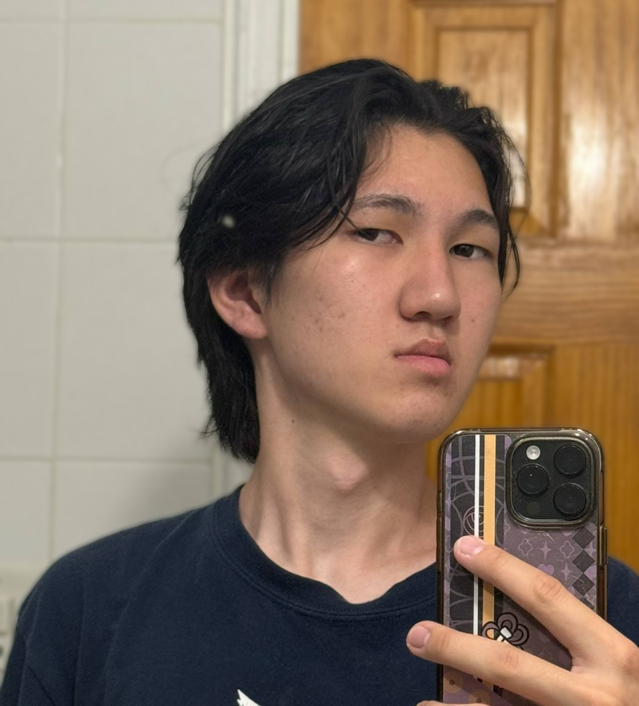

Erdni Manzhiev

Heloooooo (￣▽￣)
My name is Erdni Manzhiev, I am 19 old. A newbie to a media creating world. Although I don't have an experience with media creating, this class is an important starting point for me. I am still in the process of finding my creative identity, but I know that I want to explore anime related media. For me, it is a big opportunity to explore different forms of media and better understand what kind of creator I want to become. At my current point, my interests are not developed yet, but I am curious about animation, digital illustration, and other visual projects.
I watched anime since I was a kid and it is a really important part of life even now. I really feel connected to the style, stories, and characters. I think I would like to create something related to anime in the future, maybe some kind of animation, digital art, or visual storytelling novels. Anime inspires me, I really like different art styles and how it can convey meaningful stories. A lot of these stories explore different important themes like friendship, struggle, personal growth, but also different wild ideas and stories that can't happen in real life. From flying robots to slice of life, I really like it. So, I want to make something similar. Even though I am still discovering my creative direction, I want my work to express my thoughts, experiences, and interests. Using the teachings of this class, I hope to experiment with different forms of media and slowly find my own style and creative voice.